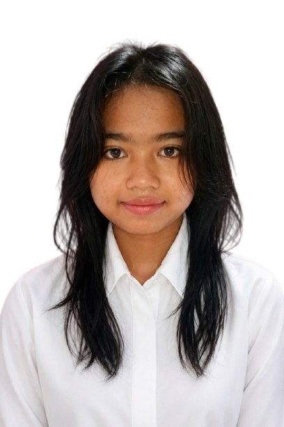

Seorang lulusan SMK NEGERI 4 KUNINGAN yang disiplin dan berorientasi pada detail. Memiliki pengalaman dalam bekerja dalam tim.
Saya berkomitmen untuk memberikan kontribusi positif bagi perusahaan melalui keterampilan manajemen waktu yang baik serta kemauan untuk terus belajar hal baru.
